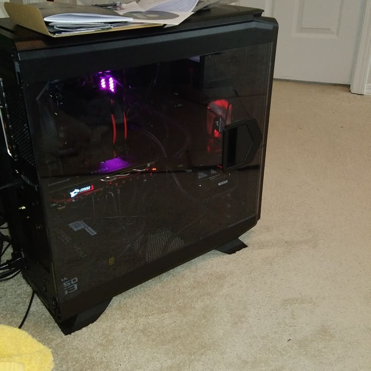
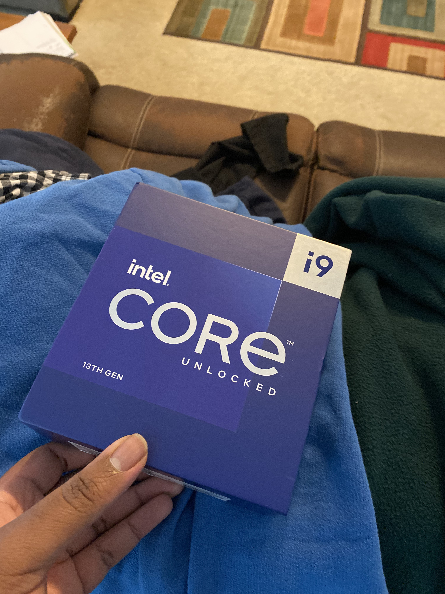
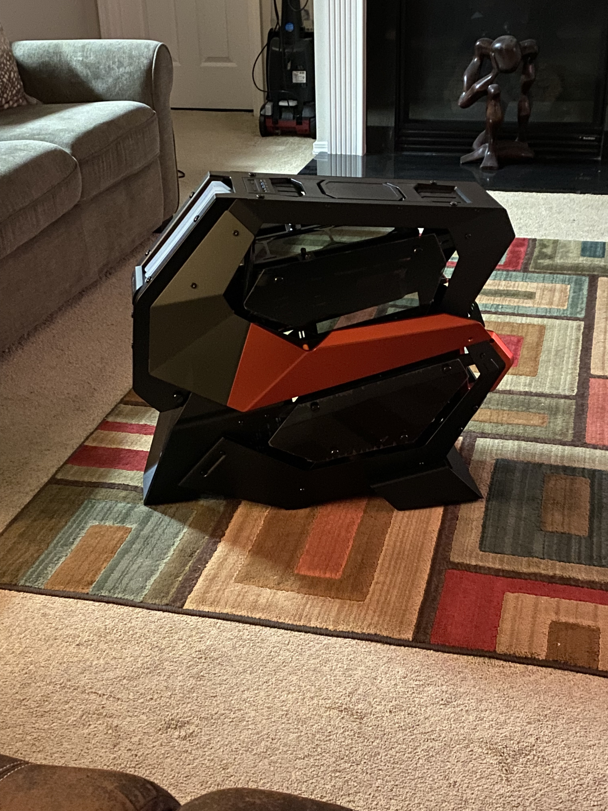
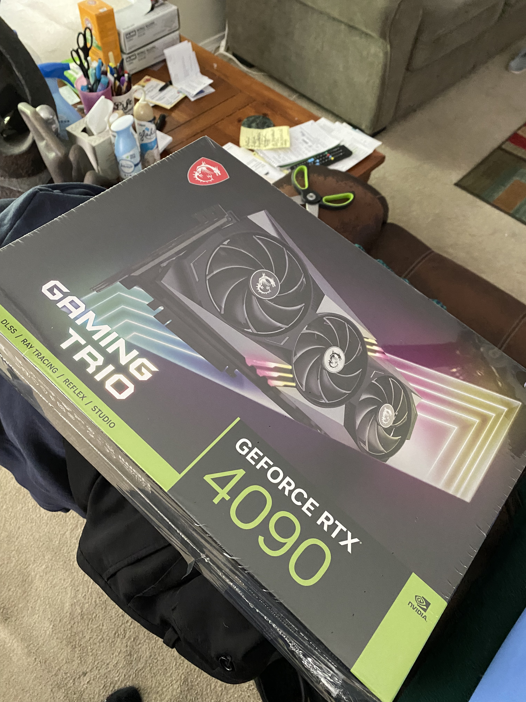
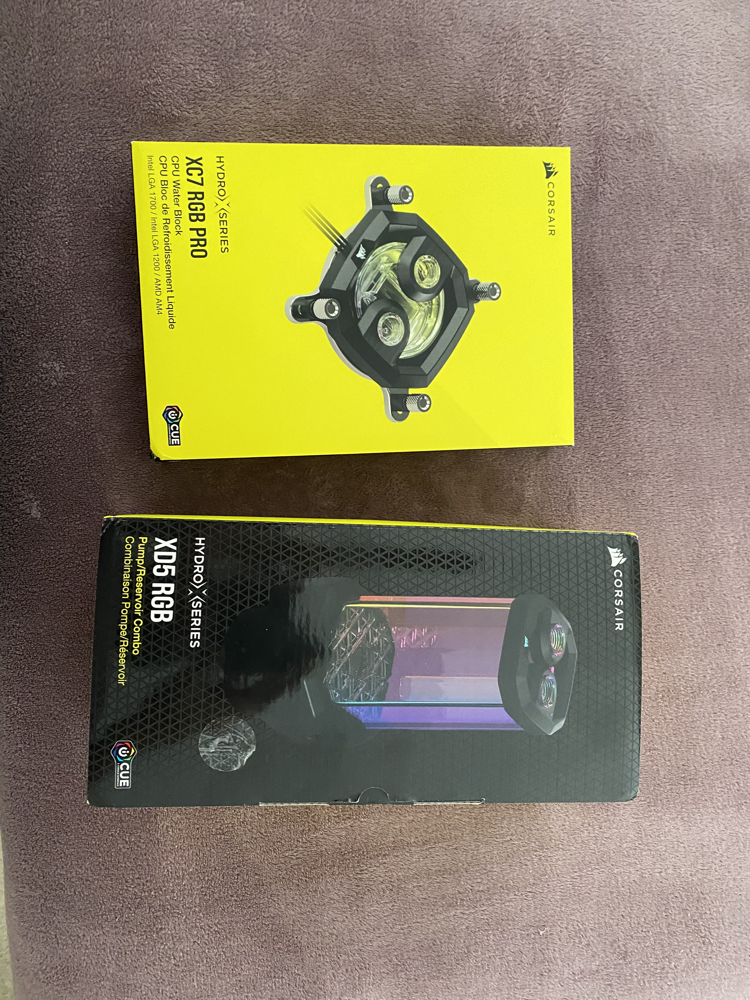

PC Building - Hobby Page
About me / about the site.
Greetings, my name is Justin Johnson i'm 25 years old and my goal is to become a full stack developer. However before really delved into software i was really big on PC building. Over the yeares I've built two PC's one from the money i gained at my first job, a simple tower for gaming. Years later i gave my PC to my cousin and built a second one, much more powerful and custom water cooled. I got into PC building from the internet after watching a few vidoes and tutorials, its an expensive but rewarding hobby.
This multi-paged website will serve as an infographic for PC building as a bobby, with lists, tables, and pictures of PC building.



Three images, headshot, first pc, second pc.
Computer building
Hobby styled Computer Building is the process of reserching or watching tutorials online about assembling parts. Buying and self assembling computer parts and troubleshooting problems. The hobby mainly focuses on hands on work and requires somewhat of a steady hand and a little knowledge on how computers work. The biggest comparison is "Adult Legos" however while legos are great for display computer building is much more rewarding. The hobby doesnt end after the power light turns on, enthusiasts will often reserch and stay up to date with trends on parts and software.
Computer Parts:
- PC Case: Optinal
- Motherboard
- Power Supply
- Storage: hardrive and or Solid State Drive
- Graphics Card
- CPU: Central Processing Unit
- Cooling: Air or Liquid
- External IO: Monitor, Mouse, Keyboard, etc




Best times and places for PC building
The best time to build a pc is when all the parts have been purchased and set aside, the time it takes to a build one varies depending on familiarity and skill. Starting out you should set aside an afternoon and a nice clean static free place for building and troubleshooting the first boot. For purchasing parts events like black friday and cyber monday are great for obtaining deals, websites like Amazon and Newegg are great sources for parts. Lastly the times before or after the drop of new tech mainly CPU's and GPU's the previous generations parts goon sale.